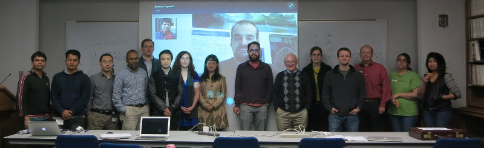
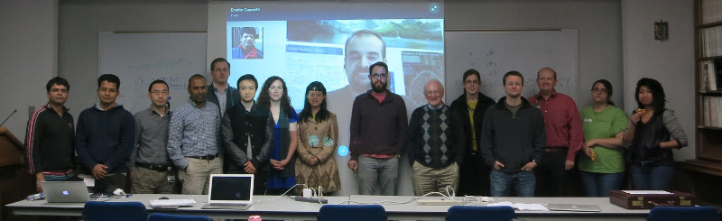
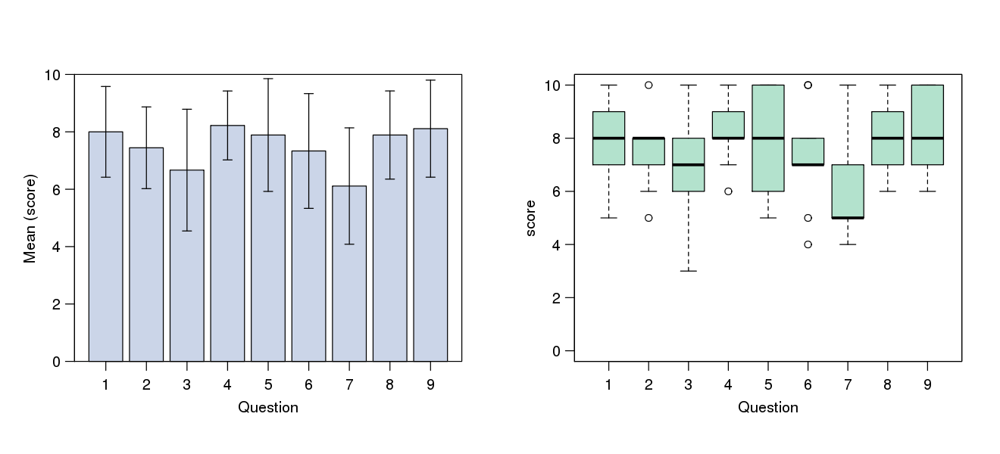

CB2-101: Introduction to Scientific Computing
CB2-101 Introdution to Scientific Computing
(5-20 November, 2015)
was successfully completed by 13 participants (see the picture).
In this page we include all the material used during the course, and the evaluation anonymously submitted by the students. We would like to thank the participants for the fruithful comments that will allow us to improve the quality of our course.

In this page we include all the material used during the course, and the evaluation anonymously submitted by the students. We would like to thank the participants for the fruithful comments that will allow us to improve the quality of our course.

- General resources
- Materials
Registration form Introduction to Linux November 5-6, 2015. Introduction to R November 9-10, 2015. Reproducible research in R slides and handout November 11, 2015. Introduction to NGS talk and handout November 12-13, 2015. R and bioinformatics November 12-13, 2015. Introduction to Python November 16, 2015. Data Structure in Python November 17-18, 2015. Advanced Modules in Python November 19, 2015. Final problem set November 20, 2015. Anthem of CB2-101 Computer Love, Album: Computer World, Kraftwerk (1981). - Evaluation
In this page we included the evaluation form anonymously compiled by the participants to evaluate the quality of our course. Answers submitted with numbers from 1 (worst) to 10 (best) have been included in the following statistics calculated by R. The evaluation form was compiled by 9 participants which rated the course with an median score of 8 over 10. The received positive and negative comments will be published soon.

Google Sheets - TSV - Rscript
- Previous Editions
Nov 2014 Held November 6-21, 2014 and successfully completed by 22 participants. Feb 2014 Held February 17-28, 2014 and successfully completed by 12 participants.
| Course syllabus | |
| Course disk image | Fedora 22 VirtualBox disk image, compressed with XZ. |
| Google discussion group | Course info and discussion forum |
| Github repository | Course materials source code and binaries. |
University of Alabama at Birmingham.
619 19th St. South, WP220.
Birmingham (AL), 35249 (USA).